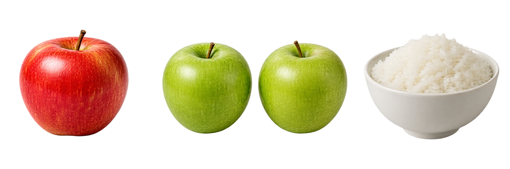

Grammar practice · 4A
What do you eat?
Plan a breakfast for two
Can you count it?4A
Countable: one, two…

an apple → two apples
Uncountable
rice · milk · bread · cheese
a rice → rice · rices → rice
1 Write the words in the correct group.
egg · water · banana · rice · tomato · bread
Countable
Uncountable
2 Choose and circle.
- We have three eggs / three egg.
- I eat a rice / rice for lunch.
- I have an apple / apple in my bag.
- We need bread / breads.